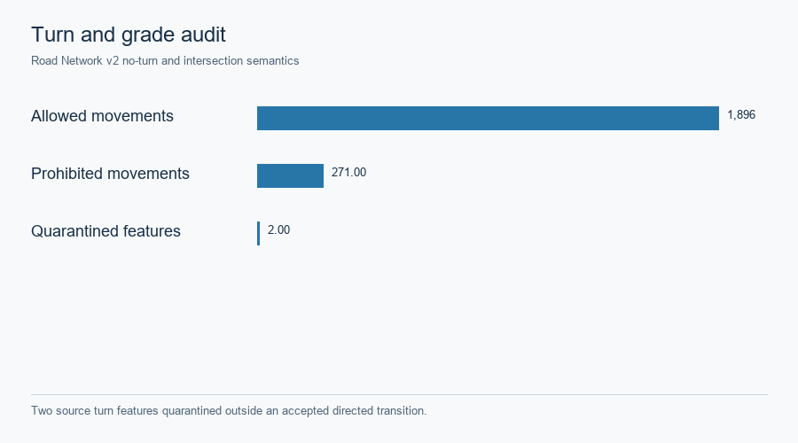

Hong Kong · source-backed GMNS and evidence grades
The bounded Tsim Sha Tsui–Jordan graph is derived from Transport Department Road Network v2. Physical node/link IDs, directed movement, source turn rules and separate nonphysical centroid/access/turn classes are retained. The 95 fine SSG and 10 parent STPUG zones use 2021 census geographies. Assignment-ready compilation checks directed reachability, turns and grade separation; source intersection evidence is required for a mixed-elevation transition.

Two source turn features were quarantined outside accepted directed transitions. SVG · Source record.

| Evidence layer | Source and use | Limit |
|---|---|---|
| Roads, posted limits and turns | Transport Department Road Network v2; source-derived physical links and legal movements | Free speed, lanes and period capacity are engineering transfers |
| Population and households | 2021 census SSG/STPUG geography and attributes | Allocation assumes uniformity within source polygons; no fine-zone survey |
| Building activity | Official CSDI footprint, storeys and names | Proxy attraction, not measured employment or GFA |
| Transit and walk | Transport Department GTFS, fares and official pedestrian links | Conservative routing with labeled fallback; no observed mode share |
| Road observations | Annual Traffic Census, detector snapshot and private UrbanNav reference | Descriptive/topology context, not held-out traffic validation |
The exact source and rights register records resource URLs, available SHA-256 hashes, evidence role and publication decisions. Raw provider archives and point-level UrbanNav material are excluded. Phase A checkpoint · R1 historical pilot · Current case.